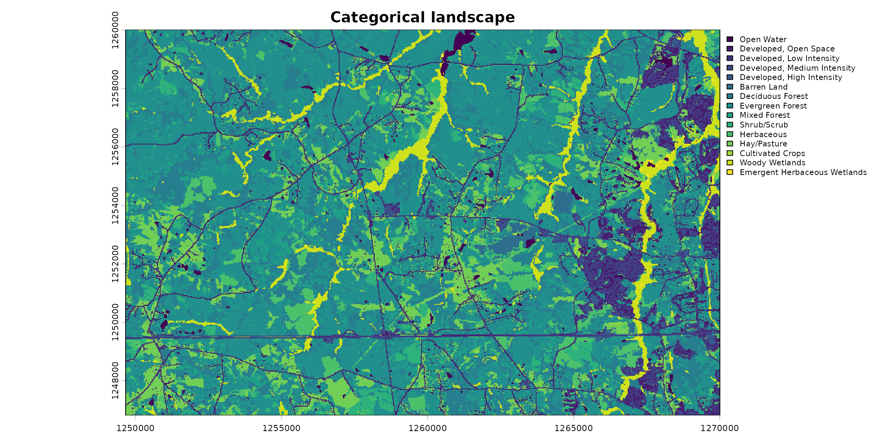
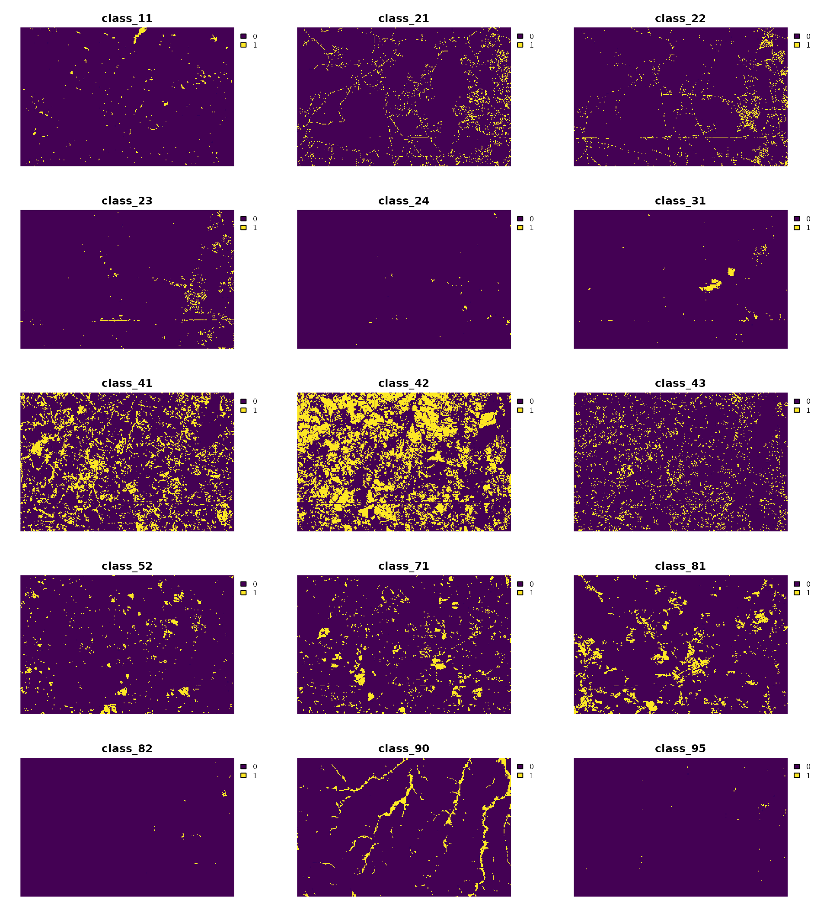
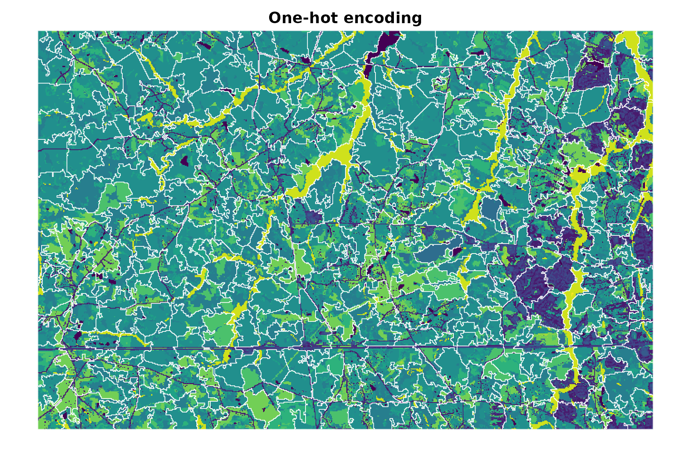
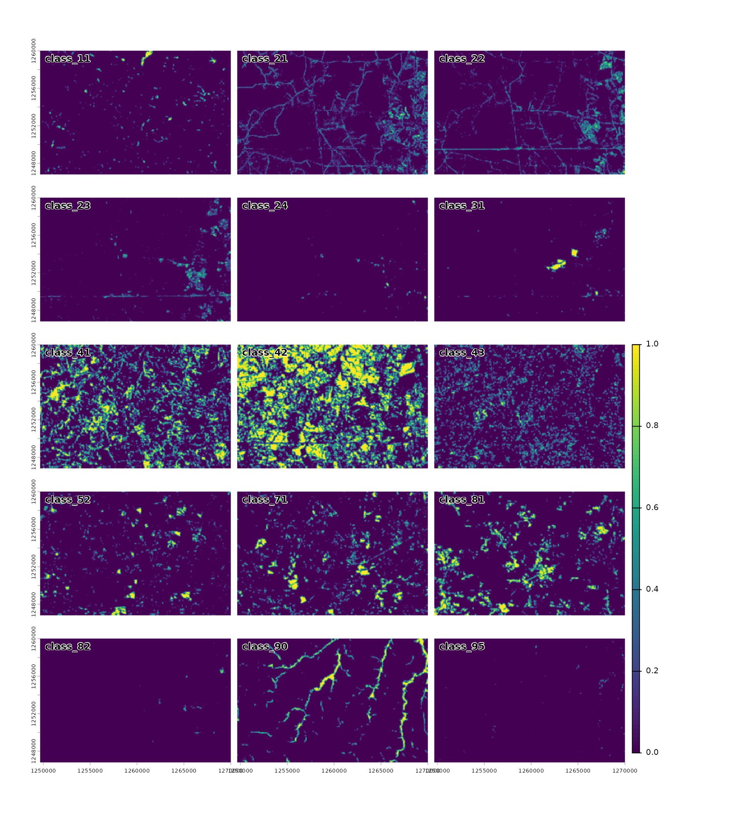
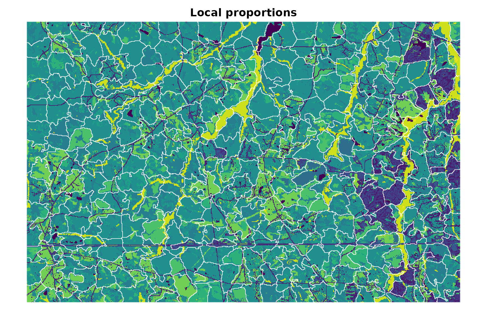

Creating supercells from categorical rasters
Jakub Nowosad
2026-11-07
Source:vignettes/articles/v2-categorical.Rmd
v2-categorical.RmdThe supercells package is designed for numeric raster data, but it can also be used with categorical rasters. In such cases, resulting supercells are groups of cells with similar classes or similar local class composition. One important difference from numeric rasters is that categorical rasters require some preparation before creating supercells, as their values cannot be used directly with numeric distance measures. For example, the difference between classes 1 and 2 is not necessarily smaller than the difference between classes 1 and 5.
There are several ways to represent categorical rasters in a numeric feature space. This vignette compares two broadly useful representations1:
- one-hot encoding, which preserves the class identity of each cell by creating a binary layer for each class
- local class proportions, which describe neighborhood composition
Each representation answers a different question, so the choice should be based on the intended interpretation of the resulting supercells.
Example data
We use the augusta_nlcd categorical landscape from the
landscapemetrics package.
library(supercells)
library(terra)
library(landscapemetrics)
data("augusta_nlcd", package = "landscapemetrics")
landscape <- unwrap(augusta_nlcd)
classes <- sort(unique(na.omit(values(landscape)[, 1])))
plot(
landscape,
type = "classes",
main = "Categorical landscape",
plg = list(cex = 0.8)
)
The raster contains 15 land-cover classes.
One-hot encoding
One-hot encoding creates one binary layer per class: for each cell, the layer representing its class is 1, and all other layers are 0.
one_hot <- rast(lapply(classes, function(class_value) {
ifel(landscape == class_value, 1, 0)
}))
names(one_hot) <- paste0("class_", classes)
plot(one_hot, nc = 3, axes = FALSE)
Next, we need to choose the supercell size (step) and
the supercell compactness. In this example, we use a step
of 30 cells (900 meters) and tune the compactness parameter to balance
the influence of value similarity and spatial proximity. We also need to
choose a distance measure. Here, we use Euclidean distance, which is
either 0 for the same class or
for different classes when comparing cell-level one-hot vectors. It does
not increase with the number of classes, so we set
dim_scale = 1 when tuning compactness instead of using the
default dimensional scaling for Euclidean distance.
one_hot_tuning <- sc_tune_compactness(
one_hot,
step = 30,
dist_fun = "euclidean",
dim_scale = 1
)
one_hot_supercells <- sc_slic(
one_hot,
step = 30,
compactness = one_hot_tuning$compactness,
dist_fun = "euclidean"
)This representation is a good starting point when the primary goal is to respect class identity and class boundaries.
plot(landscape, type = "classes", legend = FALSE, axes = FALSE, main = "One-hot encoding")
plot(one_hot_supercells[0], add = TRUE, border = "white", lwd = 0.75)
Local class proportions
For some applications, the local mixture of classes is more informative than the class at a single cell. We can average each one-hot layer within a moving window to obtain the local proportion of every class. Here, we use a 5x5 window. The resulting feature vector is nonnegative and sums to 1 for each valid cell.
class_proportions <- focal(
one_hot,
w = 5,
fun = "mean",
na.rm = TRUE,
na.policy = "omit",
fillvalue = NA
)
panel(class_proportions, nc = 3)
Because these layers form probability distributions, Jensen–Shannon
divergence ("jsd") is a more appropriate distance measure
than Euclidean distance in this case. It compares local class
composition without imposing an order on the classes. See the distance measure vignette for more
information about the available measures and their input
requirements.
proportions_tuning <- sc_tune_compactness(
class_proportions,
step = 30,
dist_fun = "jsd"
)
proportions_supercells <- sc_slic(
class_proportions,
step = 30,
compactness = proportions_tuning$compactness,
dist_fun = "jsd"
)This representation can group cells with similar neighborhood composition even when their central classes differ. The window size determines the spatial context represented by the features: larger windows describe broader patterns but smooth over more local detail.
plot(landscape, type = "classes", legend = FALSE, axes = FALSE, main = "Local proportions")
plot(proportions_supercells[0], add = TRUE, border = "white", lwd = 0.75)
Comparing the representations
The two approaches produce different segmentations because they use different representations of the categorical raster and different distance measures. Global metrics may be used to diagnose each segmentation. However, value metrics from the two workflows are not directly comparable because Euclidean one-hot vectors and class-proportion distributions describe different information and use different distance scales.